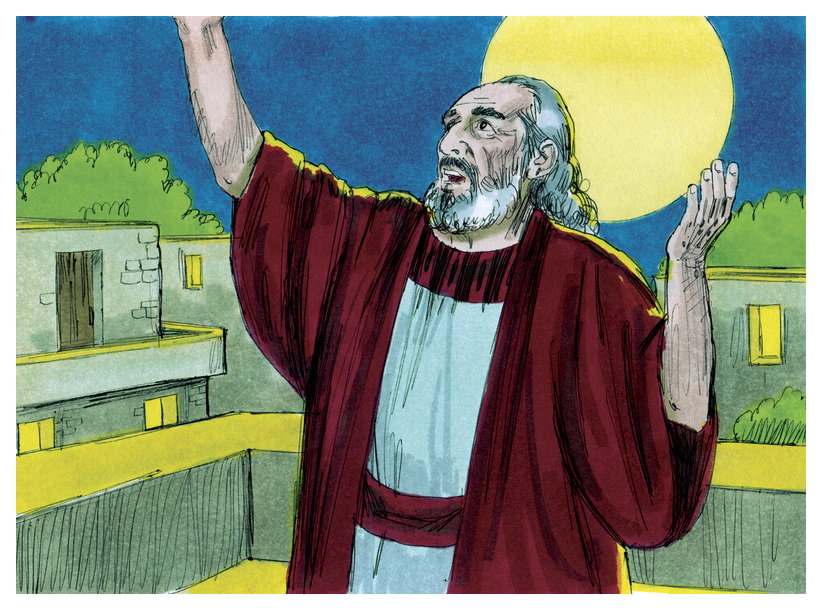

Cerita Alkitab
Pada awal mulanya, sebelum Tuhan menciptakan segala sesuatu, tidak ada apapun selain Tuhan. Lalu Tuhan menciptakan langit dan bumi.

Tapi bumi masih tidak teratur dan kosong. Kemudian Tuhan berkata "Jadilah terang".
Dan terang itu pun jadi. Tuhan menamai terang itu siang dan kegelapan itu malam. Jadilah malam dan jadilah pagi itulah hari pertama.
Kembali